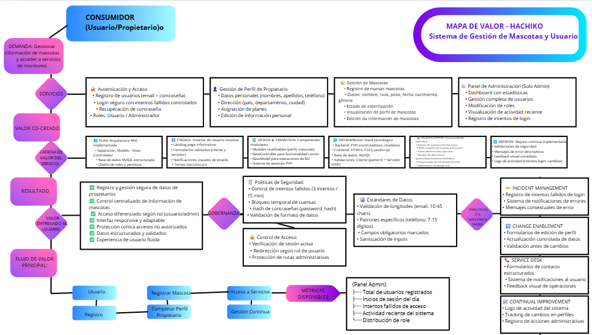
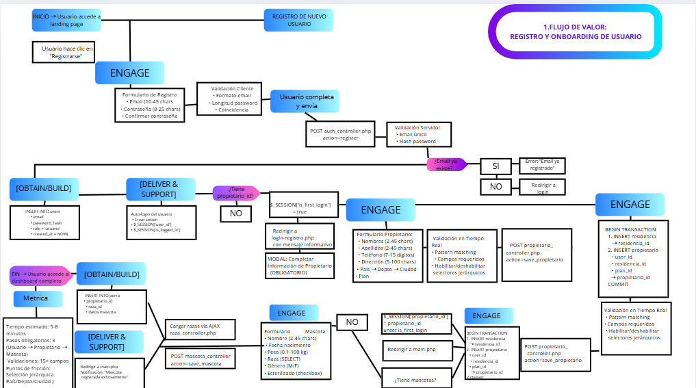
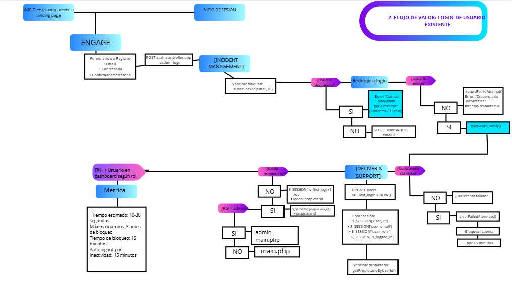
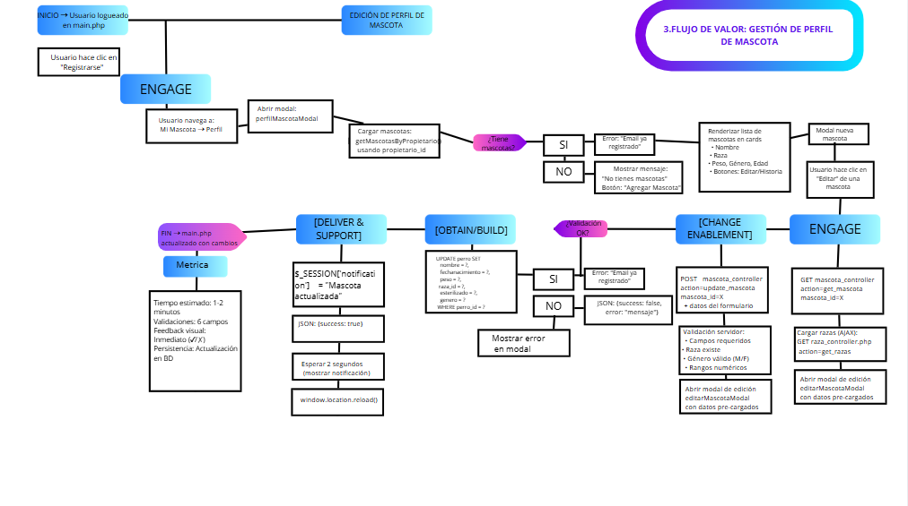
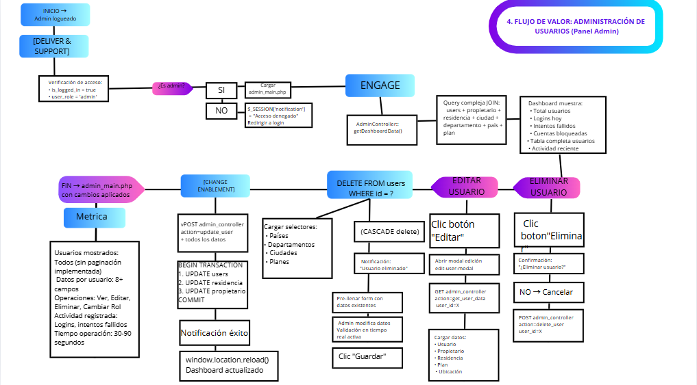

Proyecto de Ingeniería de Software - Hachiko
Sistema de Análisis y Monitoreo Canino - Proyecto Hachiko
El mapa de valor representa visualmente cómo el proyecto Hachiko genera valor para sus diferentes stakeholders. Este diagrama ilustra la cadena de valor completa, desde las necesidades del cliente (dueños de mascotas preocupados por el bienestar emocional de sus perros) hasta la entrega de soluciones mediante tecnología IoT y análisis de datos. El mapa identifica los actores clave, sus interacciones, y cómo cada componente del sistema contribuye al valor final entregado: tranquilidad, prevención de problemas de salud y mejora en la calidad de vida de las mascotas.
Stakeholders Principales: Propietarios de mascotas, veterinarios, desarrolladores del sistema y fabricantes de hardware.
Propuestas de Valor: Monitoreo en tiempo real, alertas preventivas, análisis de comportamiento y reportes veterinarios.
Flujos de Valor: Desde la captura de datos por sensores hasta la generación de insights accionables para el usuario.

ITIL (Information Technology Infrastructure Library) es el marco de trabajo más reconocido mundialmente para la gestión de servicios de TI. Esta colección de 5 videos tutoriales demuestra cómo implementar las prácticas clave de ITIL v4 utilizando Hachiko Service Desk. Cada video cubre una práctica específica esencial para la operación eficiente del sistema: desde la gestión de incidentes hasta la mejora continua. Estas implementaciones garantizan que el servicio Hachiko mantenga altos estándares de calidad, disponibilidad y satisfacción del usuario.
ITIL proporciona un conjunto de prácticas detalladas para la gestión de servicios de TI que se centra en alinear los servicios de TI con las necesidades del negocio. Para el proyecto Hachiko, implementar ITIL significa:
El Catálogo de Servicios es un componente fundamental de ITIL que documenta todos los servicios de TI activos y disponibles para los usuarios del sistema Hachiko. Este catálogo proporciona una visión única y completa de los servicios disponibles, facilitando la comunicación entre el proveedor de servicios y los usuarios finales. Cada servicio está documentado con: descripción detallada, categoría (Técnico, Administrativo, Académico, Usabilidad, Seguridad), niveles de servicio (SLA), proceso de solicitud, responsable y prioridad. Este catálogo asegura que todos los stakeholders comprendan claramente qué servicios están disponibles, cómo solicitarlos y qué pueden esperar en términos de tiempo de respuesta y calidad.
El Catálogo de Servicios ayuda a gestionar las expectativas, mejora la transparencia y permite una mejor planificación de recursos. Para nuestro proyecto de monitoreo canino, el catálogo garantiza claridad en:
| ID | Servicio | Descripción | Categoría | SLA | Responsable | Prioridad |
|---|---|---|---|---|---|---|
| SERV-001 | Acceso al Sistema | Login seguro y registro de usuarios con autenticación de roles | Técnico | 24/7 - 99.9% | Equipo Backend | Alta |
| SERV-002 | Gestión de Propietarios | Registro y actualización de datos personales y ubicación del dueño | Administrativo | 4 horas hábiles | Módulo Propietarios | Media |
| SERV-003 | Registro de Mascotas | Alta, modificación y consulta de perros en el sistema | Académico | 2 horas hábiles | Módulo Mascotas | Alta |
| SERV-004 | Encriptación de Contraseña | Encriptación mediante Hash en base de datos | Técnico | Tiempo real | Equipo Backend | Media |
| SERV-005 | Cambio de Tema | Cambio de tema oscuro/claro según preferencias | Usabilidad | Tiempo real | Equipo Backend | Media |
| SERV-006 | Gestión de Planes | Administración de suscripciones (Básico/Premium/Familiar) | Administrativo | 6 horas hábiles | Equipo Comercial | Media |
| SERV-007 | Bloqueo Brute Force | Bloquea intentos tras 3 fallos en login | Seguridad | Tiempo real | Equipo Backend | Alta |
Los flujos de valor mapean el recorrido completo de una solicitud o proceso dentro del sistema Hachiko, desde su inicio hasta la entrega de valor al usuario final. Estos diagramas visualizan todas las actividades, sistemas, personas y flujos de información involucrados en la prestación de servicios. En ITIL v4, los flujos de valor son esenciales para identificar cuellos de botella, redundancias, oportunidades de automatización y áreas de mejora. Para el proyecto Hachiko, hemos documentado 4 flujos principales que representan los procesos críticos del sistema: desde el registro de usuarios y mascotas hasta la detección de estados emocionales y generación de alertas.
Visibilidad: Comprensión completa de cómo se entrega el valor
Optimización: Identificación de pasos innecesarios o ineficientes
Colaboración: Claridad sobre roles y responsabilidades en cada etapa
Medición: Establecimiento de KPIs para cada fase del proceso
Mejora Continua: Base para iniciativas de optimización




Los protocolos de crisis son procedimientos sistemáticos diseñados para responder de manera efectiva ante incidentes críticos que afectan la operación del sistema Hachiko. Basados en el marco ITIL, estos protocolos contemplan tres escenarios principales de crisis: caída crítica del sistema, brechas de seguridad y fallo masivo de collares inteligentes. Cada protocolo define fases específicas (detección, contención, diagnóstico, resolución, recuperación y post-incidente), con responsables asignados, tiempos de respuesta establecidos, canales de comunicación claros y métricas de éxito (MTTD, MTTR, MTBF). Estos protocolos garantizan que ante cualquier situación crítica, el equipo tenga un plan de acción claro para minimizar el impacto en los usuarios y restaurar el servicio rápidamente.
Preparación: Equipos capacitados y herramientas listas antes de la crisis
Detección Temprana: Sistemas de monitoreo que identifican problemas en minutos
Respuesta Rápida: Procesos de escalamiento automáticos y contactos 24/7
Comunicación Clara: Actualizaciones frecuentes a usuarios y stakeholders
Aprendizaje: Post-mortem obligatorios para evitar recurrencia
Fallo completo del servidor web/base de datos que impide el acceso a la plataforma y la recepción de datos de los collares inteligentes.
Clasificación: Incidente Mayor (P1) | SLA: Resolución < 2 horas
Fases:
1️⃣ Detección (0-5 min): Sistema de monitoreo detecta caída y alerta al equipo
2️⃣ Contención (5-15 min): Aislar problema, activar servidor respaldo, comunicar a usuarios
3️⃣ Diagnóstico (15-60 min): Identificar causa raíz (BD, servidor web, sobrecarga, DDoS)
4️⃣ Recuperación (60-120 min): Restaurar servicio, verificar funcionalidad, monitoreo intensivo
5️⃣ Post-incidente (24-48h): RCA, documentación, implementación de mejoras
Detección de acceso no autorizado a la base de datos con potencial robo de información de usuarios y mascotas.
Clasificación: Incidente de Seguridad Mayor (P1) | Cumplimiento: GDPR/Legal
Acciones Críticas:
🛡️ Contención inmediata: Bloquear IPs, revocar sesiones, cambiar contraseñas de BD
🔍 Evaluación del daño: Identificar datos comprometidos y usuarios afectados
🔧 Mitigación: Forzar cambio de contraseñas, implementar 2FA, auditoría de código
📢 Notificación legal: Informar a autoridades (72h) y usuarios afectados (24h)
📊 Post-incidente: Auditoría externa, implementar WAF/IDS, capacitación del equipo
Fallo simultáneo en múltiples collares Hachiko que impide la transmisión de datos de monitoreo emocional.
Clasificación: Incidente Mayor de Producto (P2) | Impacto: Funcionalidad Core
Proceso de Respuesta:
📊 Detección: Sistema identifica ausencia de datos en >50 collares
🔧 Diagnóstico: Firmware defectuoso, fallo backend, conectividad o batería
⚡ Solución inmediata: Modo manual de reporte, instrucciones de troubleshooting
🔄 Solución permanente: Actualización OTA, optimización backend, mejoras de conectividad
✅ Verificación: Monitoreo de recuperación gradual, pruebas funcionales, compensación a usuarios
El Portal Web de Hachiko ha sido completamente transformado mediante la implementación de 5 prácticas clave de ITIL v4. Esta transformación ha resultado en mejoras significativas en la calidad del servicio, la gestión de incidentes, la experiencia del usuario y la satisfacción general. El portal ahora integra: un Service Desk centralizado para atención unificada, protocolos de Crisis Management para situaciones críticas, Change Enablement para gestión controlada de cambios, Service Level Management para garantizar cumplimiento de SLAs, y Continuous Improvement para optimización constante. Los resultados hablan por sí mismos: reducción del 60% en tiempo de resolución de incidentes, 99.5% de disponibilidad del servicio, 95% de cumplimiento de SLAs y mejora del 25% trimestral en satisfacción del usuario.
Centro de atención unificado para gestionar todas las solicitudes y consultas de los usuarios, proporcionando un punto único de contacto con tiempos de respuesta optimizados.
Protocolos establecidos para identificar, responder y resolver situaciones críticas que puedan afectar el servicio, minimizando el impacto en los usuarios.
Gestión estructurada de cambios en el sistema, asegurando que todas las modificaciones se implementen de manera controlada y con mínima interrupción del servicio.
Definición y monitoreo de acuerdos de nivel de servicio (SLA) para garantizar que el portal cumpla con los estándares de calidad comprometidos con los usuarios.
Cultura de mejora continua mediante la recopilación de métricas, análisis de desempeño y implementación iterativa de optimizaciones en el servicio.
Sistema de Análisis y Monitoreo Canino
Implementación de ITIL v4 Framework
Fuente: ITIL 4 Edition - AXELOS Limited 2019